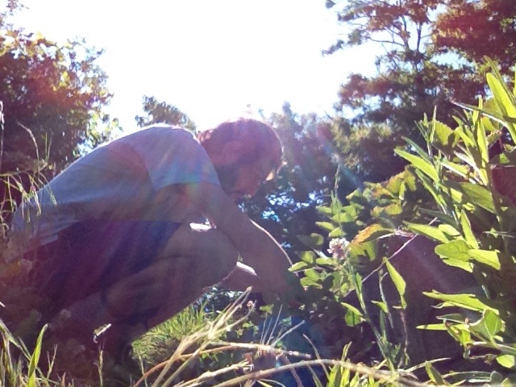
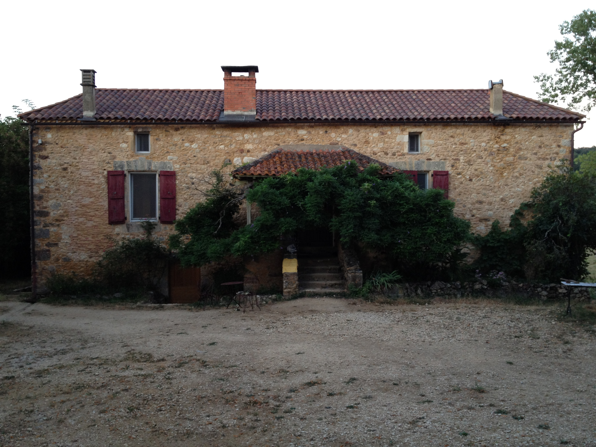

How To WWOOF
In the summer of 2013 I worked on an organic farm in France through an organization called World Wide Opportunities on Organic Farms. Since then I've helped several friends and internet strangers do the same in countries around the world. I wrote this guide to serve as an introduction to how to get started with WWOOFing.
Click here to read or download the e-book
If you like the book and feel like buying me a beer you can do so at any of these places.